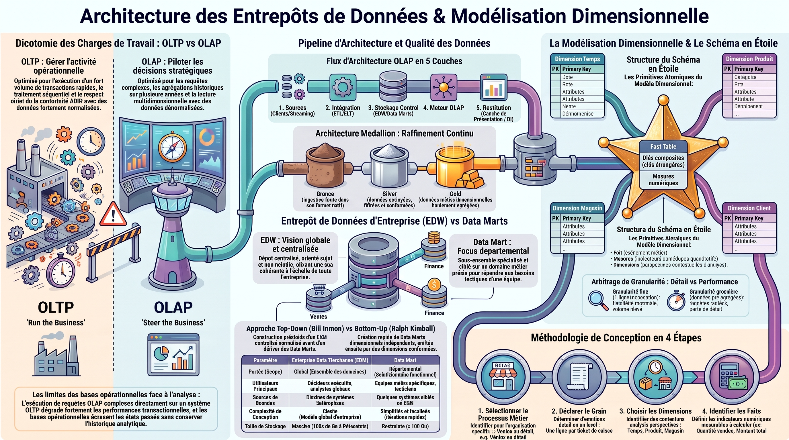
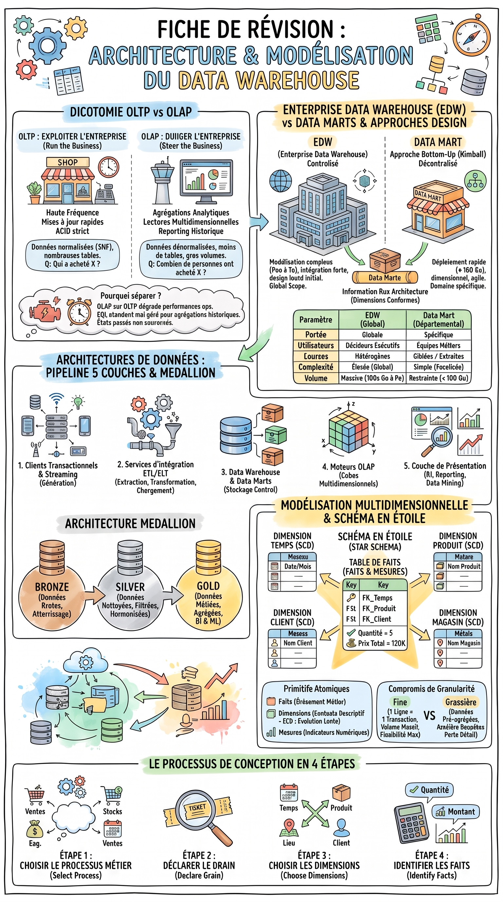

×

Une immersion interactive complète, animée et visuelle pour concevoir, structurer et interroger un système décisionnel hospitalier haute performance.
Pourquoi une entreprise ne peut jamais exécuter ses analyses de gestion directement sur sa base de données de production.
Expérimentez ce qui arrive aux urgences hospitalières lorsqu'une requête analytique est lancée sur la base opérationnelle.
L'isolation de l'entrepôt permet de scanner 10 millions de consultations sans ralentir l'enregistrement d'un seul patient.
Formalisés par Bill Inmon, père fondateur du Data Warehousing, ces 4 propriétés définissent l'essence même du décisionnel.
Structuré autour des processus métier fondamentaux (la Visite, le Soin, la Facturation) et non autour des logiciels informatiques sources.
Résout définitivement les discordances sémantiques, les formats de date divergents et les codifications incompatibles entre services.
Mémoire immuable. Les données insérées ne sont ni modifiées ni effacées par les transactions courantes afin de figer la réalité historique.
Chaque donnée est explicitement ancrée dans une dimension temporelle permettant d'analyser les tendances, la saisonnalité et l'évolution pluriannuelle.
La méthodologie canonique de Ralph Kimball pour modéliser n'importe quel entrepôt de données sans faille conceptuelle.
Identifier l'activité opérationnelle génératrice d'événements physiques à optimiser. On recherche le verbe d'action.
Déterminer avec une précision chirurgicale ce qu'une seule ligne dans la table de faits représente physiquement.
Répondre aux questions interrogatives : Qui ? Quand ? Où ? Quoi ? Dans quel contexte ?
DIM_TEMPS (Quand ?), DIM_PATIENT (Pour qui ? Âge, genre, ville), DIM_PRATICIEN (Par qui ? Spécialité, statut).Extraire les grandeurs quantitatives numériques rattachées à l'événement et répondant au grain fixé.
duree_intervention_min, frais_consultation, et le compteur technique nb_visites = 1.Cliquez sur n'importe quelle table pour inspecter ses champs, ses clés surrogate et son additivité mathématique.
Cœur numérique du Data Warehouse. Stocke chaque acte médical dispensé sous un grain atomique non agrégé.
| Mesure | Type | Additivité |
|---|---|---|
duree_intervention_min |
Minutes | Additive |
frais_consultation |
MAD | Additive |
duree_moyenne_acte |
Ratio | Non-additive |
Composez visuellement votre requête décisionnelle. Observez la génération SQL dynamique et la restitution instantanée des données.
| Spécialité | Tranche d'Âge | Indicateur Calculé | Distribution Visuelle |
|---|
Visualisez comment les décideurs manipulent le cube de données médicales pour extraire l'information stratégique.
Fixe la valeur d'une dimension spécifique pour obtenir une tranche plane bidimensionnelle du cube.
Du système transactionnel jusqu'aux dashboards exécutifs de Business Intelligence.
Logiciels métier cliniques (Dossier Patient Informatisé), laboratoires, facturation SAP, capteurs IoT.
Extraction des flux, déduplication, nettoyage des adresses, harmonisation des dates et attribution des Surrogate Keys.
Stockage unifié haute disponibilité et comptoirs thématiques spécialisés (RH, Finance Médicale, Épidémiologie).
Stockage en colonnes vectorisé (Parquet / BigQuery / Vertica) accélérant les calculs d'agrégations par 100x.
Tableaux de bord dynamiques (Power BI, Tableau), rapports réglementaires Ministère et modèles prédictifs IA.
Données brutes fidèles aux sources, stockées en ingestion sans altération pour historique complet.
Données nettoyées, standardisées, dédoublonnées et validées selon les règles de gouvernance clinique.
Schémas en étoile prêts à l'emploi pour les directeurs d'hôpitaux et les analystes BI.
Comment gérer un praticien qui change de spécialité ou un patient qui déménage de Rabat à Casablanca.
Cliquez sur chaque concept pour le classer dans la bonne table. Testez votre rigueur méthodologique !
Cliquez sur une infographie pour l'ouvrir en plein écran avec zoom haute définition.

Le schéma complet des 5 couches, du staging jusqu'aux Data Marts et au reporting analytique.

La comparaison décisive entre l'approche Top-Down (EDW en 3NF) et Bottom-Up (Constellation de Data Marts).
6 questions fondamentales avec feedback immédiat pour valider votre maîtrise du sujet.
Requêtes SQL ANSI optimisées pour la direction du CHU, décryptage technique pas-à-pas, simulations de restitution OLAP et règles de modélisation infaillibles pour l'examen.
| Spécialité Médicale | Ancienneté | Durée Moyenne | Consultations | Intensité Horaires (Visualisation) |
|---|---|---|---|---|
| Cardiologie | 1 an (Junior) | 48.5 min | 342 | |
| Neurologie | 2 ans (Junior) | 42.0 min | 289 | |
| Pédiatrie | 6 ans (Confirmé) | 26.4 min | 815 | |
| Cardiologie | 16 ans (Senior) | 22.1 min | 1 120 | |
| Médecine Générale | 19 ans (Expert) | 16.5 min | 2 450 |
La table de faits est atomique (1 ligne par acte). La jointure est réalisée sur l'entier praticien_key (4 octets), évitant le matricule textuel lourd de production.
Toutes les colonnes non agrégées (specialite, anciennete_annees) sont rigoureusement reportées dans le GROUP BY. AVG est arrondi à 1 décimale.
Mise en évidence : les juniors en cardiologie passent 2.2x plus de temps par patient que les seniors. Le CHU doit instaurer des créneaux de consultation doublés pour le tutorat clinique.
| Mois | Spécialité | Créneau | CA Total (MAD) | Tarif Moyen | Volume Relatif |
|---|---|---|---|---|---|
| 2026 - Octobre | Urgences Chirurgicales | 🌙 Nuit (Garde) | 485 200 MAD | 650.00 MAD | |
| 2026 - Octobre | Cardiologie | ☀️ Journée | 412 800 MAD | 480.00 MAD | |
| 2026 - Octobre | Radiologie & IRM | ☀️ Journée | 320 000 MAD | 320.00 MAD | |
| 2026 - Octobre | Pédiatrie d'Urgence | 🌙 Nuit (Garde) | 198 400 MAD | 420.00 MAD | |
| 2026 - Octobre | Médecine Interne | ☀️ Journée | 145 600 MAD | 280.00 MAD |
frais_consultation est une mesure 100% additive. On peut la sommer à travers le temps, les services et les moments de la journée sans biais mathématique.
La requête relie la table de faits à deux branches de l'étoile (dim_temps et dim_praticien). Plan d'exécution en Hash Join parallèle ultra-performant.
La majoration de nuit (+35%) compense le surcoût des indemnités de garde et dégage une marge d'exploitation nette positive sur les urgences chirurgicales.
| Ville Provenance | Tranche d'Âge | Spécialité Demandée | Volume Patients | Taux de Fréquentation |
|---|---|---|---|---|
| Rabat (Agglomération) | 60+ ans (Senior) | Cardiologie & Vasculaire | 2 150 | |
| Salé (Rive Droite) | 18-59 ans (Adulte) | Traumatologie / Urgences | 1 680 | |
| Kénitra (Nord) | 0-17 ans (Enfant) | Pédiatrie de Spécialité | 1 120 | |
| Khémisset | 60+ ans (Senior) | Oncologie & Chimiothérapie | 740 | |
| Témara | 18-59 ans (Adulte) | Orthopédie Ambulatoire | 590 |
ville_provenance et tranche_age sont consolidées dans la même dimension, évitant de créer des tables géographiques en flocon.
Si un patient déménage de Kénitra à Rabat, son historique antérieur reste imputé à Kénitra grâce à la clé surrogate patient_key historisée.
Mise en lumière : 40% des consultations pédiatriques viennent de Kénitra. Justification formelle pour l'ouverture d'une antenne pédiatrique délocalisée au nord de la région.
| Mois | Jour | Population Ciblée | Consultations | Durée Moy. | Alerte Saturation |
|---|---|---|---|---|---|
| Décembre | Lundi | 60+ ans (Senior) | 2 480 | 34.2 min | |
| Janvier | Samedi | 0-17 ans (Enfant) | 2 110 | 29.1 min | |
| Novembre | Lundi | 60+ ans (Senior) | 1 890 | 31.5 min | |
| Février | Dimanche | 0-17 ans (Enfant) | 1 640 | 27.8 min | |
| Juillet | Mercredi | 0-17 ans (Enfant) | 1 150 | 21.0 min |
Le filtre WHERE pa.tranche_age IN (...) réduit de 60% le nombre de tuples dès l'entrée du pipeline avant les jointures et l'agrégation spatio-temporelle.
Mise en évidence du pic gériatrique du lundi matin (suivi post-weekend) et du pic pédiatrique du weekend (fermeture des cabinets de ville).
Permet à la direction de geler les congés médicaux entre le 15 décembre et le 10 janvier et d'activer 20 lits tampons d'hospitalisation de courte durée (UHCD).
L'âge du patient ou l'ancienneté sont des nombres, mais ils ne quantifient pas l'acte : ils servent à filtrer et grouper !
fact_visites(age_patient)
dim_patient(tranche_age)
Une moyenne ou un pourcentage est non-additif ! La somme de moyennes est mathématiquement fausse.
AVG(duree_moyenne_mensuelle)
SUM(duree) / COUNT(visite)
Bannissez le numéro de Sécurité Sociale ou le CIN comme clé de jointure dans la table de faits.
f.cin_patient = p.cin_patient
patient_key INT IDENTITY
En OLAP décisionnel, la dénormalisation est une vertu majeure qui évite les cascades de jointures lentes.
dim_patient → dim_ville → region
dim_patient(ville, province, region)
Pourquoi ne pas brancher Power BI sur le serveur transactionnel de garde ? La contention et les verrous !